Step 1
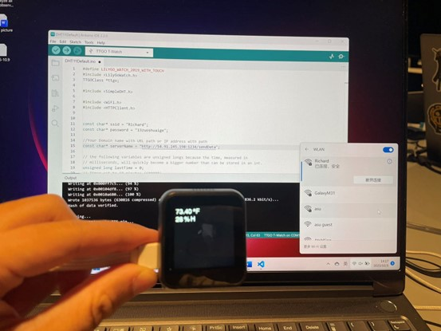Step 2
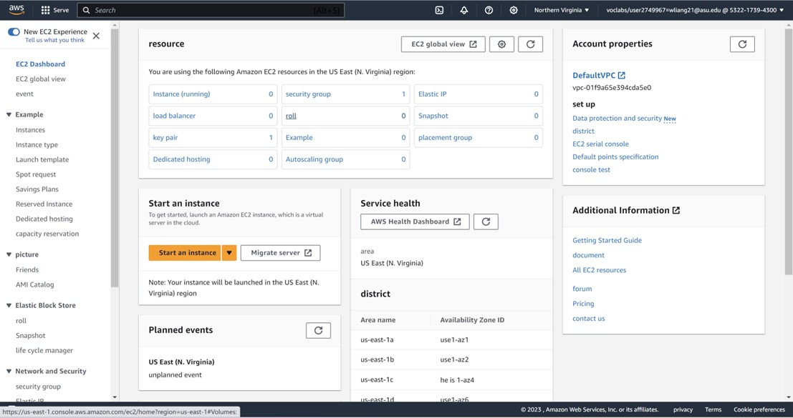Step 3
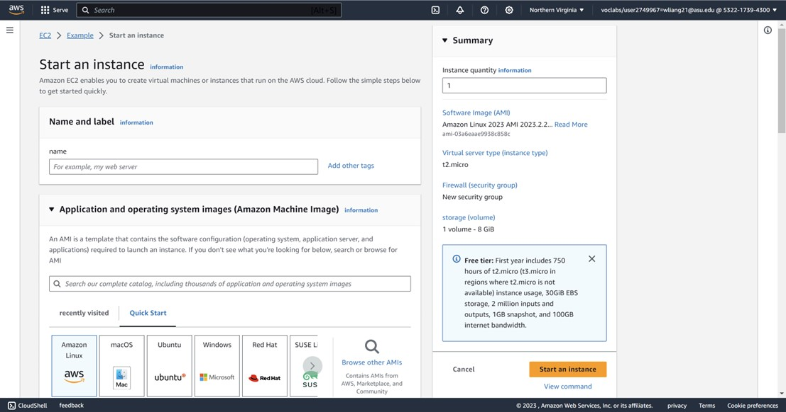Step 4
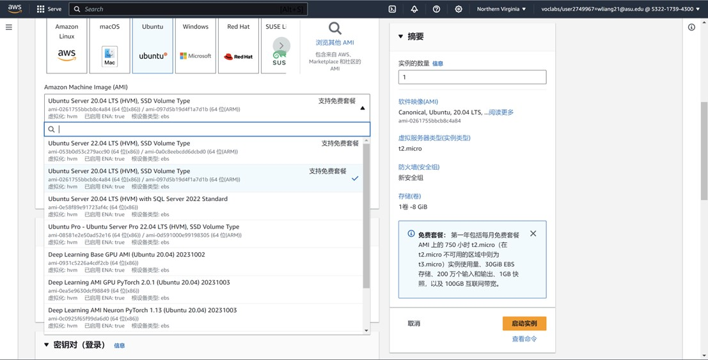Step 5
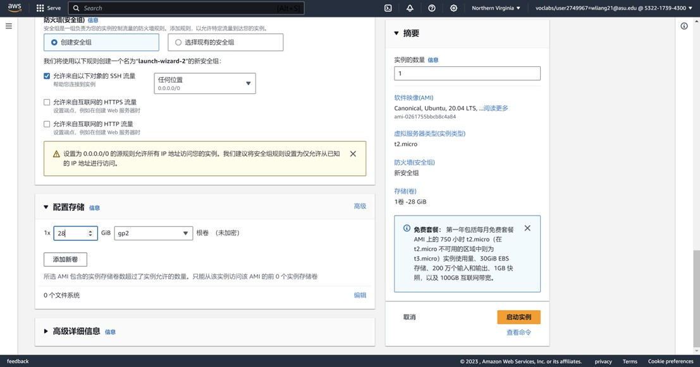Step 6
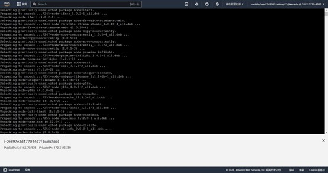Step 7
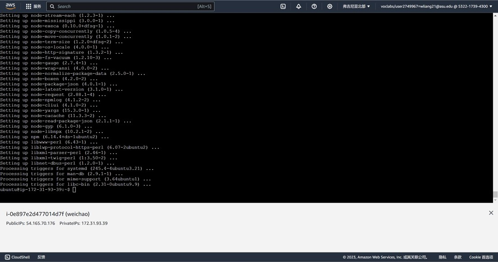Step 8 cd the server.js
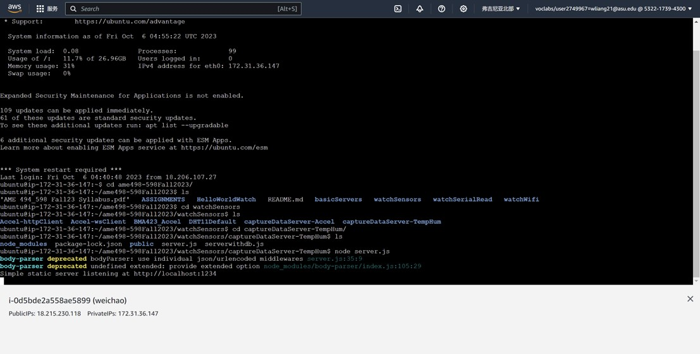Step 9 Setting up a password and account for a cellular hotspot in the Arduino IDE
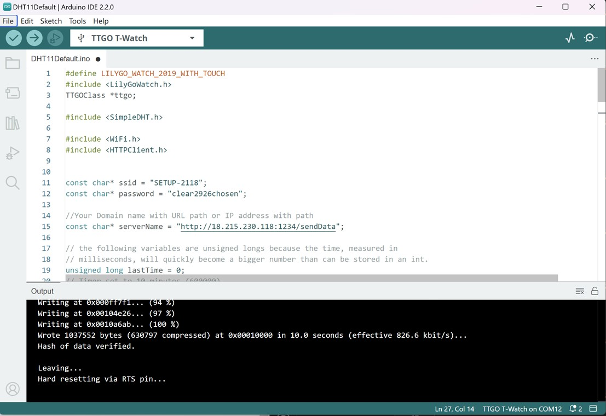Step 10 run the server.js
Step 10 open the server.js
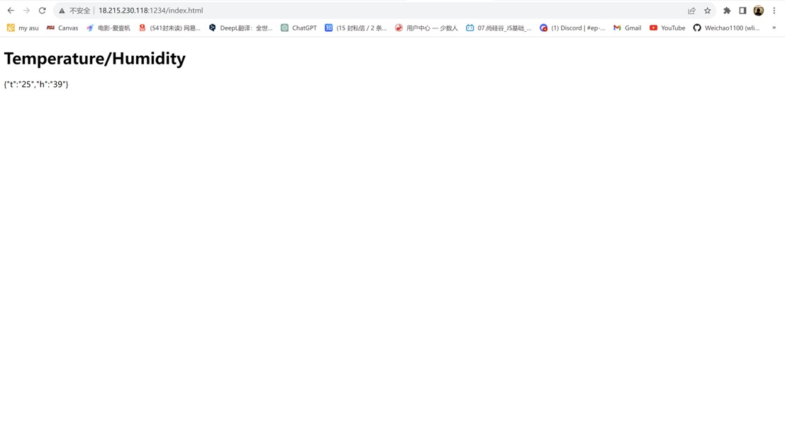Step 11 Inserting images in html
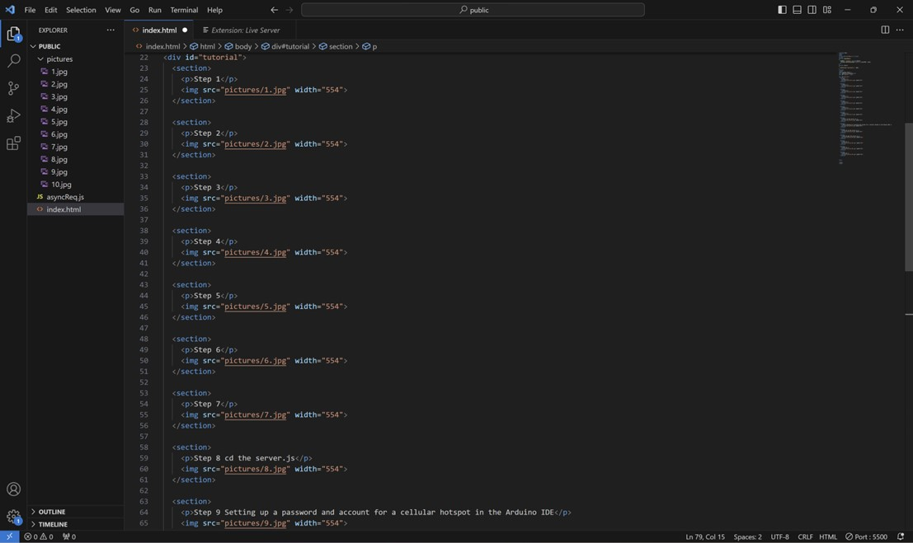Step 12 Push the entire public file to github
Step 13 Clone the github file in ec2, then open the html page in ec2.